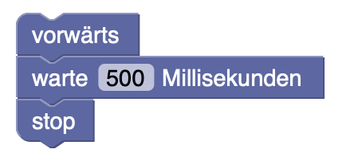

Erste Blöcke
Mit Blockly kannst du dem roten Auto Anweisungen geben. Diese Liste von Anweisungen wird haargenau befolgt. Man bezeichnet das auch als Programm oder Algorithmus. Und das beste ist: du musst die Tastatur nicht mehr benutzen, sondern kannst dich entspannt zurücklehnen und zuschauen 😎
Rechts von der Simulation findest du den Werkzeugkasten. Er ist in Kategorien eingeteilt, die jeweils Blöcke zu einem bestimmten Thema enthalten. Die Kategorie Logik enthält zum Beispiel Blöcke, mit denen das Auto Entscheidungen treffen kann. In der Kategorie Bloblocar findest du Blöcke zur Steuerung des Autos.
Aufgabe. Öffne die verschiedenen Kategorien (durch Anklicken) und schaue dich darin um!
Du kannst Blöcke aus dem Werkzeugkasten auf die Leinwand (das große weiße Feld) ziehen. Um Blöcke zu löschen, kannst du sie anklicken und auf die ⌫-Taste drücken.
Aufgabe. Ziehe drei Blöcke auf die Leinwand.
Aufgabe. Lösche die Blöcke wieder.
Wir schreiben jetzt unser erstes richtiges Programm.
Aufgabe. Öffne die Kategorie Bloblocar. Ziehe einen forwärts-, einen warte ...- und einen stop-Block auf die Leinwand und ordne die Blöcke direkt untereinander an, sodass sie miteinander verknüpft werden.
Am unteren Rand des Simulationsfensters befindet sich ein mit ▶ beschrifteter Knopf. Ein Klick darauf startet dein Programm.
Neben dem ▶-Knopf befindet sich der ↺-Knopf, mit dem du die Simulation in den Anfangszustand zurückversetzen kannst.
Aufgabe. Führe dein Programm mehrmals aus.
Aufgabe. Setze die Simulation in den Anfangszustand zurück und führe dein Programm erneut aus. Was passiert, wenn das rote Auto mit anderen Fahrzeugen kollidiert?
Das Auto bewegt sich, aber es fährt immer nur geradeaus. Das lässt sich ändern! (Außerdem achtet es nicht auf andere Autos, aber darum kümmern wir uns auch noch.)
Aufgabe. Öffne die Kategorie Bloblocar und füge einen nach links abbiegen- sowie einen weiteren warte...-Block vor dem stop-Block ein.
Aufgabe. Setze die Simulation zurück und führe das neue Programm aus.
Das Auto fährt wieder eine Weile geradeaus, dreht dann aber nach links und fährt weiter. Cool!
Aufgabe. Verändere das Programm so, dass das Auto auf der Straße bleibt. Tipp: Dazu musst du die Wartezeit vor dem Abbiegen erhöhen.
⭐️ Aufgabe. Erweitere das Programm so, dass das Auto möglichst weit um den Kurs kommt, ohne von der Straße abzukommen! Schaffst du es, eine ganze Runde zu programmieren?